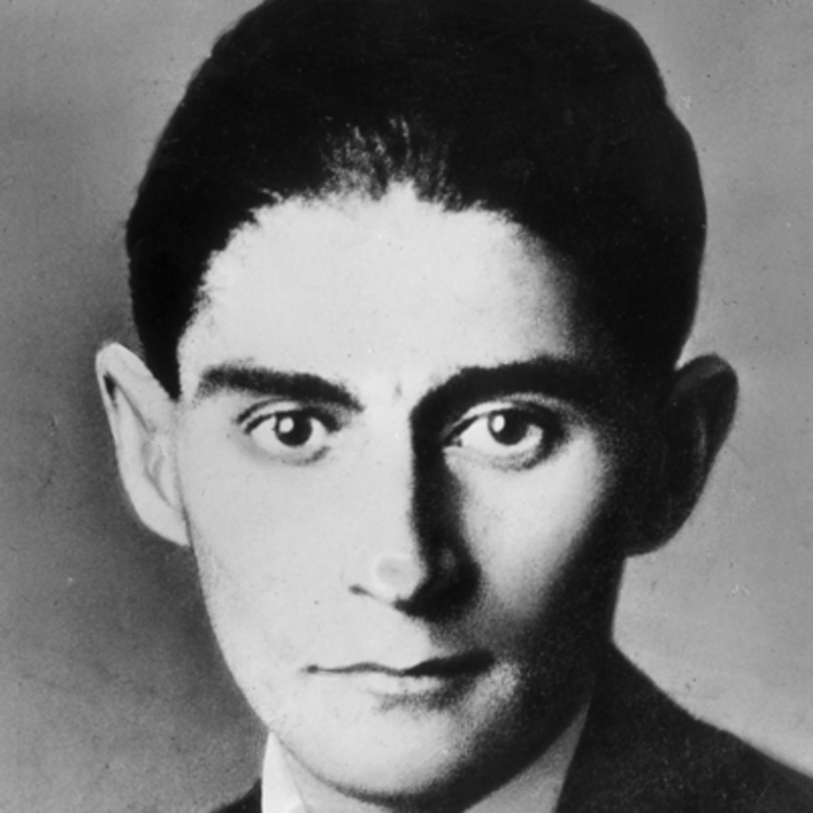

Unlike many famous writers, Kafka is rarely quoted by others. Instead, he is noted more for his visions and perspective. Shimon Sandbank, a professor, literary critic, and writer, identifies Kafka as having influenced Jorge Luis Borges, Albert Camus, Eug�ne Ionesco, J. M. Coetzee and Jean-Paul Sartre. A Financial Times literary critic credits Kafka with influencing Jos� Saramago, and Al Silverman, a writer and editor, states that J. D. Salinger loved to read Kafka's works. In 1999 a committee of 99 authors, scholars, and literary critics ranked Der Process and Das Schloss the second and ninth most significant German-language novels of the 20th century. Sandbank argues that despite Kafka's pervasiveness, his enigmatic style has yet to be emulated. Neil Christian Pages, a professor of German Studies and Comparative Literature at Binghamton University who specialises in Kafka's works, says Kafka's influence transcends literature and literary scholarship; it impacts visual arts, music, and popular culture. Harry Steinhauer, a professor of German and Jewish literature, says that Kafka "has made a more powerful impact on literate society than any other writer of the twentieth century". Brod said that the 20th century will one day be known as the "century of Kafka".
Michel Andre Bossy writes that Kafka created a rigidly inflexible and sterile bureaucratic universe. Kafka wrote in an aloof manner full of legal and scientific terms. Yet his serious universe also had insightful humour, all highlighting the "irrationality at the roots of a supposedly rational world". His characters are trapped, confused, full of guilt, frustrated, and lacking understanding of their surreal world. Much of the post-Kafka fiction, especially science fiction, follow the themes and precepts of Kafka's universe. This can be seen in the works of authors such as George Orwell and Ray Bradbury.